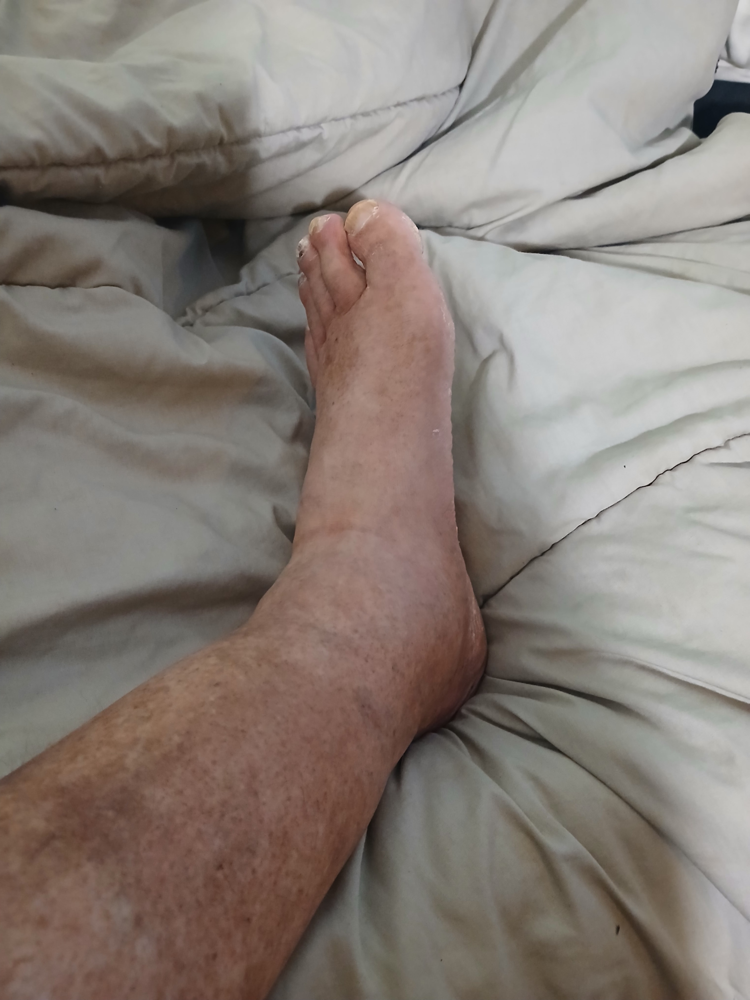

Miscellanious Reports
August 26, 2025
I use claude.ai to compile information on current personal health
and other issues.
Health: Poor Lower Leg Circulation
Reports
- lower_leg_circulation_report - makes the connection between symptoms and potential causal apathies
- vitamin_b12_report -
detailed report on the connection between vitamin B12 and the apathies being
discussed.
- ways to supplement the natural supply of vitamin B12 are discussed
- venous_insufficiency_treatment -
- treatments for venous insufficiency
Images
Home
Lower legs/Feet

Lower legs/Feet
Left lower leg

Lower left legx
Left ankle

Left ankle
Sore spots

Sore spot
Health: male hernias
- hernia_report - gives a summary of incidence and coincidence rates of make hernias